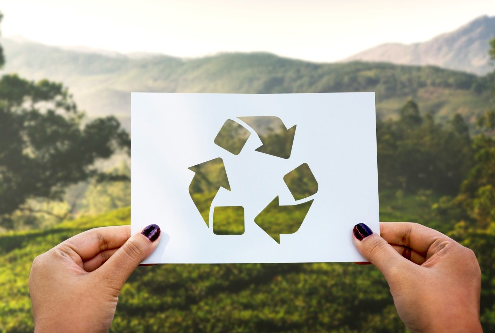

¿QUÉ IMPACTO TIENEN LAS 7R EN ESPERANZA, PUEBLA?
Las 7 Rs tienen un impacto fundamental en la comunidad de Esperanza, Puebla, promoviendo una cultura de sostenibilidad y fortaleciendo la economía circular. Al aplicar estos principios: rediseñar, reducir, reutilizar, reparar, renovar, recuperar y reciclar, la comunidad logra beneficios significativos en los ámbitos ambiental, económico y social.
Desde una perspectiva ambiental, la implementación de las 7 Rs reduce la contaminación y minimiza la cantidad de residuos que terminan en vertederos, lo que ayuda a preservar los ecosistemas locales. Menos desechos significan un mejor uso de los recursos naturales y una disminución en la huella ecológica de la comunidad.
Económicamente, estos principios fomentan el ahorro y la optimización de recursos. Reparar y reutilizar productos, en lugar de desecharlos, reduce el gasto en bienes de consumo e impulsa el crecimiento de negocios dedicados al reciclaje y la recuperación de materiales. Esto genera empleo en sectores relacionados con la sustentabilidad, fortaleciendo la economía local.
A nivel social, las 7 Rs generan conciencia ecológica y promueven la colaboración comunitaria. Muchas iniciativas de reciclaje y reutilización dependen de la participación de los ciudadanos, lo que refuerza el sentido de responsabilidad compartida y la unión entre vecinos.

Para fortalecer la aplicación de las 7 Rs en Esperanza, Puebla, algunas recomendaciones clave son:
¡POSTER DE LAS 7R!